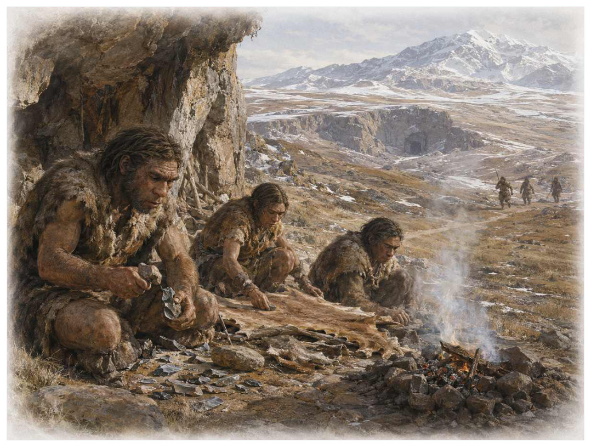
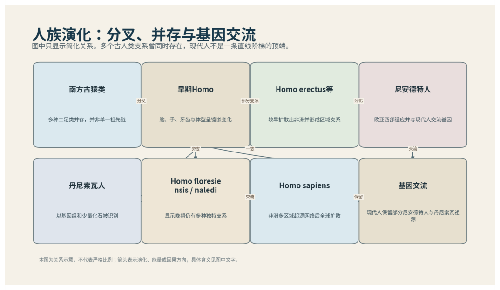

第19篇 · 人类出现 · 第 59 章
人族的灌木丛：并存、迁徙与基因交流
本篇主题:人类出现
人族是一簇并存、杂交和灭绝的支系，而不是一列进步阶梯。

本章科学复原配图 （用于呈现结构与生态关系, 不替代化石照片、测量数据与系统发育证据。）
如果把演化树看作不断生长又不断被修剪的枝丛，约700万年前至现代是其中关系重新布置的一段。人类演化不是猴子、猿人、现代人依次排队，而是一丛不断分叉又偶尔重新连接的枝条。南方古猿已经稳定两足却保留攀爬能力；早期人属扩大脑和工具使用；直立人扩散出非洲；尼安德特人、丹尼索瓦人、弗洛勒斯人、纳莱迪人和智人在不同时期并存。古DNA证明现代人与尼安德特人、丹尼索瓦人发生基因交流，物种边界比旧教科书直线图更复杂。
进入这个时代
若真正置身其中，首先感受到的是介质本身：水是否含氧、地面是否稳定、空气是否干燥、植被是否遮挡视线。身体结构只有放在这些条件中才有意义。更新世的一片非洲或欧亚景观中，可能同时存在不同人族。有人擅长长距离行走和狩猎，有人保留更强攀爬结构，有人生活在岛屿并形成小体型。石器、火、食物共享和照料扩大了文化适应，基因变化不再是唯一快速响应环境的方式。
在“人族的灌木丛：并存、迁徙与基因交流”所覆盖的时间里，不能把地理与气候当作固定背景。海陆位置、海平面、河流或植被结构会改变资源可达性，同一性状在不同地区可能得到完全相反的选择结果。
以人族的灌木丛：并存、迁徙与基因交流为例，演化的单位是种群而不是单个英雄。个体结构影响生存，但地理分布、繁殖速度、幼体死亡率和种群规模决定变异能否保留下来。化石中最醒目的成年骨架，未必是决定支系命运的阶段。 在本章中，这一约束具体落在“两足行走释放双手并改变能量预算和产道”这条关系上。
再从约700万年前至现代的时间尺度看，生态位不是预先摆好的空格，而是生物与环境共同形成的关系。掘穴者改变沉积物，森林固定河岸，礁体构建者制造硬底，巨型植食者改变火与养分。生物占据生态位的同时也在制造新的生态位。 它与“镶嵌式两足演化”共同决定了后续变化可以沿哪些路径发生。

图 59-1 人族演化是分叉、并存和基因交流的灌木。
生态系统如何运转
在约700万年前至现代，“两足行走释放双手并改变能量预算和产道”把环境条件转化为生物之间的差异。相同气候并不会平均影响所有支系，因为它们利用的食物、水层、底质和繁殖地点并不相同。
围绕“两足行走释放双手并改变能量预算和产道”，还要考虑空间异质性。一项在浅海、河谷或林冠有效的策略，移到深水、干旱内陆或开阔地便可能失去优势。因此同一支系常出现区域性扩张，而不是全球同步取代。 对人族的灌木丛：并存、迁徙与基因交流而言，这一后果还会与“合作、食物分享和社会学习提高技术累积”相互放大或抵消。
本章的一条关键关系是“合作、食物分享和社会学习提高技术累积”。它首先改变资源在个体之间的分配：能更早发现、处理或占据资源的种群获得收益，而另一方会承受新的选择压力。
围绕“合作、食物分享和社会学习提高技术累积”，这一机制也会留下间接证据：咬痕、修复伤、足迹密度、粪化石、牙齿磨损和群落年龄结构分别记录不同环节。只有多种证据方向一致，行为解释才应上调可信度。 对人族的灌木丛：并存、迁徙与基因交流而言，这一后果还会与“文化与基因形成新的反馈，使人类改变环境后再承受自己制造的选择”相互放大或抵消。
“文化与基因形成新的反馈，使人类改变环境后再承受自己制造的选择”体现了生态系统的反馈性。一方结构或行为稍有改变，另一方的防御、逃避、繁殖和空间选择就会重新排列，长期累积后才形成宏观演化差异。
围绕“文化与基因形成新的反馈，使人类改变环境后再承受自己制造的选择”，从演化树看，相似关系可能在远亲中反复出现。功能相近不必意味着近缘，而同一祖先结构也可能被后代改作完全不同的用途；生态解释必须与系统发育互相校验。 对人族的灌木丛：并存、迁徙与基因交流而言，这一后果还会与“两足行走释放双手并改变能量预算和产道”相互放大或抵消。
关键演化创新
在“人族的灌木丛：并存、迁徙与基因交流”中，围绕“镶嵌式两足演化”，从共同选择角度看，“镶嵌式两足演化”可能先服务旧功能，后来才参与今天最熟悉的用途。把最终功能倒推成起源原因，会把演化误写成有目的的工程。 它首先需要在约700万年前至现代的生态条件下产生可测量收益。
就“镶嵌式两足演化”而言，研究者通过近缘支系比较、发育同源、关节活动、微观组织和出现顺序重建这条路径。真正有价值的过渡化石不是“半成品”，而是证明中间组合可以独立生活。 本章把它与“工具、火与累积文化”并列，是为了显示复杂性状往往依赖多部分协同。
在“人族的灌木丛：并存、迁徙与基因交流”中，围绕“工具、火与累积文化”，讨论“工具、火与累积文化”时，最重要的问题是它解除哪一道限制。只要原有身体在运动、摄食、呼吸或繁殖上受约束，能够稍微缓解约束的变异就可能积累，最终产生看似跃迁的结果。 它首先需要在约700万年前至现代的生态条件下产生可测量收益。
就“工具、火与累积文化”而言，它的成功具有条件性。环境稳定时，专门化可提高效率；危机到来时，同一专门化可能限制食物和栖息地选择。演化创新因此既能开启辐射，也能制造新的脆弱性。 本章把它与“古DNA揭示的杂交网络”并列，是为了显示复杂性状往往依赖多部分协同。
在“人族的灌木丛：并存、迁徙与基因交流”中，围绕“古DNA揭示的杂交网络”，从共同选择角度看，“古DNA揭示的杂交网络”可能先服务旧功能，后来才参与今天最熟悉的用途。把最终功能倒推成起源原因，会把演化误写成有目的的工程。它首先需要在约700万年前至现代的生态条件下产生可测量收益。
就“古DNA揭示的杂交网络”而言，这一变化还可能在多个支系中独立发生。若功能相似而解剖来源不同，就是趋同；若结构来自共同祖先但功能改变，则属于同源结构的分化。二者不能仅靠外观判断。 本章把它与“镶嵌式两足演化”并列，是为了显示复杂性状往往依赖多部分协同。
生命群像：把物种放回生态网络
阿法南方古猿（Australopithecus afarensis）
从外形看，阿法南方古猿（Australopithecus afarensis）最容易被记住的是骨盆、膝与足迹支持稳定两足，长臂和肩部仍适合树上活动。它生活在约390万至290万年前，大小约身高约1至1.5米，承担两足行走并保留攀爬能力的人族这一生态功能。把年代、体型和功能放在一起，才能避免把奇特形态当成无意义装饰。
对阿法南方古猿而言，从种群角度看，偶发捕猎和个体伤病远不如长期繁殖率重要。广泛分布的普通个体比一具异常巨大的标本更能代表支系，然而普通个体往往较少进入公众叙事。研究者必须防止把化石收藏偏好误当成古代丰度。 这使“骨盆、膝与足迹支持稳定两足，长臂和肩部仍适合树上活动”不能脱离其两足行走并保留攀爬能力的人族角色来理解。
支持该解释的材料包括露西骨架与莱托利足迹证据强，具体社会结构和工具能力未知。若不同证据出现冲突，应优先报告范围而不是强行给出单值。例如体长会随参照类群变化，运动能力会随软组织假设变化，系统位置也会随新增性状重新计算。
由阿法南方古猿这个案例看，它也展示专门化的双面性：结构在稳定环境中提高效率，却可能在气候、食物或竞争格局突变时限制转向。灭绝不是对设计的道德评分，而是性状、地理范围和偶然事件相遇后的历史结果。 它在约390万至290万年前留下的记录，因此同时是第59章所讨论的形态史和生态史的一部分。
能人（Homo habilis）
能人（Homo habilis）是约240万至140万年前的一名真实生态成员，而不是通往后代的抽象过渡。它约有体型小、脑量约早期人属范围，以使用石器和杂食的早期人属的方式获取资源；手骨、牙齿与奥杜威工具常关联，但分类可能包含多个物种反映了其祖先历史与局部选择压力共同留下的结果。
对能人而言，把它放回群落后，结构的意义更清楚。食物并不会平均分布，水深、植被高度、底质和季节把资源切成小块；它的身体让其中一部分资源可被利用，也使它与近缘种错开生态位。种群命运还取决于幼体能否成长、繁殖地点是否稳定以及灾害后是否仍有避难所。 这使“手骨、牙齿与奥杜威工具常关联，但分类可能包含多个物种”不能脱离其使用石器和杂食的早期人属角色来理解。
我们之所以能够作出上述判断，主要因为是否真正属于人属及哪些个体制造工具仍有争论，不能把工具专属归给一个物种。单一结构通常有多种功能解释，所以还要查看磨损、病理、肌肉附着、沉积环境和近缘比较。计算模型能排除不可能姿势，却不能自动恢复没有保存的软组织。
由能人这个案例看，面对仍有争议的细节，负责任的复原不是停止讲述，而是标注证据等级。形态、年代和亲缘可较确定，具体姿势、叫声、求偶和群猎则按材料降级；新标本会在这些边界内继续改写认识。 它在约240万至140万年前留下的记录，因此同时是第59章所讨论的形态史和生态史的一部分。
直立人（Homo erectus）
若把镜头从时代拉近到个体，直立人（Homo erectus）会首先进入视野。它生活于约190万至10多万年前，地区差异大，体型约接近现代人身高，体格强壮。作为广泛扩散、长距离行走和多样工具使用者，它依靠长腿、较大脑和阿舍利工具显示生态范围扩大与环境和其他生物发生关系。
对直立人而言，同域物种的存在迫使它分割时间与空间。相似牙齿不一定吃完全相同的食物，相似四肢也可能适应不同底质；微磨损、同位素和伴生群落常能揭示这种细分。环境改变时，原本减少竞争的专门化又可能成为迁移和改食的障碍。 这使“长腿、较大脑和阿舍利工具显示生态范围扩大”不能脱离其广泛扩散、长距离行走和多样工具使用者角色来理解。
其复原依赖火的稳定控制、海上扩散和种内分类在不同地点证据强度不同。年代和保存形态通常属于较强证据，体重、速度、颜色和社会行为则需要额外假设。书中把这些层次拆开，是为了让读者知道哪些可视为事实，哪些仍应等待更多材料。
由直立人这个案例看，它不是祖先链条上必须跨过的一格。演化树中同时存在许多近缘支系，只有少数留下后代；旁支化石同样关键，因为它们显示某组性状出现的顺序和可行范围。 它在约190万至10多万年前，地区差异大留下的记录，因此同时是第59章所讨论的形态史和生态史的一部分。
尼安德特人（Homo neanderthalensis）
尼安德特人（Homoneanderthalensis）存在于约40万至4万年前。现有材料显示其大小约矮壮、脑容量范围与现代人重叠，生态位置接近欧亚寒温带大型猎物利用者和复杂文化人群。古DNA、工具、颜料和照料伤病证据显示高度社会性让它成为理解本章主题的合适案例，但不意味着同一类群所有成员都采用相同策略。
对尼安德特人而言，它的成功不需要在所有性能上压倒其他物种，只需在特定资源和风险组合中留下更多后代。速度、咬合、装甲、感官与繁殖之间存在预算，某项性能极端化往往意味着另一项被牺牲。所谓“霸主”只是复杂权衡后的区域性结果。 这使“古DNA、工具、颜料和照料伤病证据显示高度社会性”不能脱离其欧亚寒温带大型猎物利用者和复杂文化人群角色来理解。
科学家并未直接看见它生活，依据是灭绝涉及小种群、气候、竞争和吸收杂交，不能归为智力不足。现代类比可以帮助提出可检验模型，却不能取代化石；越具体的短时行为，越需要痕迹、内容物或重复病理等直接线索。
由尼安德特人这个案例看，这个案例还提醒我们，亲缘和生态角色是两件事。近亲可以因资源分化而外形迥异，远亲也能因相似压力而趋同。把它放在演化树和食物网两个坐标中，才不会误写成线性进步。 它在约40万至4万年前留下的记录，因此同时是第59章所讨论的形态史和生态史的一部分。
丹尼索瓦人（Denisovans）
在中晚更新世，丹尼索瓦人（Denisovans）以约身体形态仍知之有限的身体参与食物网。它不是孤立的“明星生物”，而是亚洲广泛分布的古人群；由指骨、牙齿、下颌和古DNA识别，与现代大洋洲及亚洲人群发生基因交流决定它能利用哪些资源，也决定必须承担哪些成本。
对丹尼索瓦人而言，从种群角度看，偶发捕猎和个体伤病远不如长期繁殖率重要。广泛分布的普通个体比一具异常巨大的标本更能代表支系，然而普通个体往往较少进入公众叙事。研究者必须防止把化石收藏偏好误当成古代丰度。 这使“由指骨、牙齿、下颌和古DNA识别，与现代大洋洲及亚洲人群发生基因交流”不能脱离其亚洲广泛分布的古人群角色来理解。
证据核心是化石极少，外貌和生态不能从基因组完全复原；可能包含多个深分化种群。化石记录更擅长回答“结构是什么”，较难回答“每天怎样行动”。足迹、胃内容物、咬痕或胚胎若存在，会显著缩小推测范围；若只有零散骨骼，行为叙述就必须更克制。
由丹尼索瓦人这个案例看，它所代表的身体方案后来可能消失，也可能被远亲以不同材料重新发明。生命史因此既有可重复的功能解，也有不可复制的谱系路径。两者结合，才解释现代生物为何既熟悉又偶然。 它在中晚更新世留下的记录，因此同时是第59章所讨论的形态史和生态史的一部分。
弗洛勒斯人（Homo floresiensis）
认识弗洛勒斯人（Homo floresiensis）要先放弃静态骨架印象。它生活在约10万至5万年前，约身高约1.1米，日常任务是作为弗洛勒斯岛小型人族维持能量与繁殖。小脑、小体型与独特腕足结构可能反映岛屿侏儒化和古老祖征只是这一整套生活史中最容易化石化的部分。
对弗洛勒斯人而言，把它放回群落后，结构的意义更清楚。食物并不会平均分布，水深、植被高度、底质和季节把资源切成小块；它的身体让其中一部分资源可被利用，也使它与近缘种错开生态位。种群命运还取决于幼体能否成长、繁殖地点是否稳定以及灾害后是否仍有避难所。 这使“小脑、小体型与独特腕足结构可能反映岛屿侏儒化和古老祖征”不能脱离其弗洛勒斯岛小型人族角色来理解。
判断它的生活方式时，研究者首先使用病理个体说缺乏支持，但其祖先究竟接近直立人还是更早人属仍争论。随后会检验替代解释：同样的牙是否也能处理其他食物，同样的骨骼比例是否由年龄造成，同一骨层是否来自群体生活还是灾难性聚集。排除过程比贴标签更重要。
由弗洛勒斯人这个案例看，过去的复原常受完整现代动物模板影响，新材料则迫使研究者接受更陌生的身体比例或生活方式。最稳妥的表达是保留估计区间，并明确哪些软组织、颜色和社会行为仍属合理推测。 它在约10万至5万年前留下的记录，因此同时是第59章所讨论的形态史和生态史的一部分。
因果链：环境、生态与性状
如果把人族的灌木丛：并存、迁徙与基因交流当作一次自然实验，可以追问：假如“两足行走释放双手并改变能量预算和产道”较弱，“工具、火与累积文化”是否仍会带来同样收益；假如“合作、食物分享和社会学习提高技术累积”更强，阿法南方古猿的骨盆、膝与足迹支持稳定两足，长臂和肩部仍适合树上活动是否反而成为负担。反事实无法直接验证，却能帮助研究者识别模型隐含的因果假设。随后再用骨盆、足骨和足迹重建步态和石器磨损、动物骨切痕和火塘判断行为寻找可区分的预测：不同机制应在体型分布、损伤类型、沉积环境或出现顺序上留下不同痕迹。科学解释不是为现有图景编一个顺耳故事，而是让相互竞争的解释接受同一批材料检验。
“两足行走释放双手并改变能量预算和产道”与“文化与基因形成新的反馈，使人类改变环境后再承受自己制造的选择”之间常存在反馈。一个支系改变沉积、植被或猎物数量后，环境会对其自身和其他支系产生新的选择压力；短期收益可能导致长期资源下降，局部工程行为也可能创造此前不存在的栖息地。阿法南方古猿作为两足行走并保留攀爬能力的人族，直立人作为广泛扩散、长距离行走和多样工具使用者，即使从不直接相遇，也可能经由这种环境改造联系起来。生态系统因此不是静态背景上的竞赛场，而是参与者不断修改规则的动态结构；这正是解释人族的灌木丛：并存、迁徙与基因交流为何会留下长期后果的关键。
亲缘关系为功能解释设定边界。“古DNA揭示的杂交网络”若在近缘支系中以不同程度出现，最简解释通常是祖先已具备部分结构，后代分别强化或丢失；若远亲在相似生态位中出现相近功能，则需要检查内部解剖是否来自不同材料。阿法南方古猿与直立人可用于演示这一区分：外形近似不自动证明近缘，外形差异也不否定深层同源。把系统发育树、年代和生态证据叠在一起，才能判断人族的灌木丛：并存、迁徙与基因交流中的相似究竟来自共同继承、趋同还是保留的原始特征。
从资源入口看，“两足行走释放双手并改变能量预算和产道”决定能量首先由谁获得，而“合作、食物分享和社会学习提高技术累积”决定能量随后怎样在群落中转移。只有当个体能够借助“镶嵌式两足演化”把资源转化为生长或后代时，形态优势才会成为种群优势。阿法南方古猿与能人分别展示了这条链上的不同位置：前者的骨盆、膝与足迹支持稳定两足，长臂和肩部仍适合树上活动使其偏向两足行走并保留攀爬能力的人族，后者的手骨、牙齿与奥杜威工具常关联，但分类可能包含多个物种则服务于使用石器和杂食的早期人属。这并不意味着二者必然直接竞争；更常见的情况是，它们通过共享资源、改变栖息地或影响共同捕食者而间接连接。把这种间接作用纳入，才看得见人族的灌木丛：并存、迁徙与基因交流不是物种名单，而是一张持续重新分配能量的网络。
“文化与基因形成新的反馈，使人类改变环境后再承受自己制造的选择”说明环境不是在所有个体身上平均施力。若一个种群分布广、世代较短或能使用多种资源，它可能把一次局部危机吸收到地理和生活史差异之中；若另一个种群依赖狭窄水深、单一植物或特定繁殖场，平时高效的专门化就可能在变化中放大风险。能人和直立人的差异可以用来提出这种比较，但不能仅凭外形宣布谁更适应。真正需要的是地层连续性、地区分布、年龄结构和伴生群落共同告诉我们，哪些性状在人族的灌木丛：并存、迁徙与基因交流的具体条件下转化成了更稳定的繁殖。
时代横截面：个体、种群与证据
把阿法南方古猿与能人并排观察，可以看到同一时代并不存在唯一正确的身体方案。阿法南方古猿以骨盆、膝与足迹支持稳定两足，长臂和肩部仍适合树上活动参与两足行走并保留攀爬能力的人族，能人则依靠手骨、牙齿与奥杜威工具常关联，但分类可能包含多个物种承担使用石器和杂食的早期人属；两者可能在食物尺寸、活动空间或时间上错开，从而降低直接竞争。若环境改变使这些维度重新重叠，原先共存的支系才可能发生更强替代。比较的目的不是判断谁更先进，而是识别每套结构在哪些条件下有效、在哪些条件下暴露成本。
尺度转换是人族的灌木丛：并存、迁徙与基因交流最容易被忽略的问题。阿法南方古猿的一次摄食、一次移动或一次繁殖属于分钟到季节尺度；种群扩张需要数百至数万年；“镶嵌式两足演化”在演化树上的固定则可能跨越更久。短期观察能够说明结构怎样工作，却不能单独解释支系为何在约700万年前至现代扩张。反之，宏观多样性曲线能显示替换，却不能指出每次选择发生在什么身体和生活阶段。把尺度接起来，因果链才完整。
从失败的替代解释出发，能够看见研究如何推进。若把阿法南方古猿简单解释为两足行走并保留攀爬能力的人族，就应检查其骨盆、膝与足迹支持稳定两足，长臂和肩部仍适合树上活动是否真的适合该功能；若另一种功能同样可行，再看磨损、同位素、沉积环境或共存生物能否区分。能人与直立人提供了比较基线，帮助判断某一结构是普遍祖征、特殊适应还是成长阶段差异。结论不是从外观直觉跳出，而是在一系列被排除的可能性之后留下。
本章还可以作为灭绝选择性的预演。若危机首先削弱“两足行走释放双手并改变能量预算和产道”，依赖该环节的阿法南方古猿可能比外形更脆弱但食物广泛的能人更早衰退；若危机破坏的是繁殖场或幼体环境，成年体型和武器几乎不能提供保护。分布范围、成熟速度、休眠能力与食谱因此要和骨盆、膝与足迹支持稳定两足，长臂和肩部仍适合树上活动、手骨、牙齿与奥杜威工具常关联，但分类可能包含多个物种等显眼结构一起评估。危机筛选的是整套生活史，而不是单项竞技能力。
从保存角度看，阿法南方古猿和能人也可能被化石记录不公平地对待。阿法南方古猿的骨盆、膝与足迹支持稳定两足，长臂和肩部仍适合树上活动若包含坚硬、容易辨认的部分，就更可能被采集和命名；能人若身体柔软、个体小或生活在侵蚀环境，真实丰度可能被严重低估。骨盆、足骨和足迹重建步态能补充一部分信息，石器磨损、动物骨切痕和火塘判断行为又提供另一尺度的限制。只有先问“什么容易被保存”，再问“什么当时常见”，才不会把博物馆展柜的比例误当成古生态比例。
科学家为什么这样判断
围绕“骨盆、足骨和足迹重建步态”，高可信结论通常来自独立方法一致。例如形态暗示某种食性时，微磨损、同位素或胃内容物若给出相同方向，解释便更稳固；若结果冲突，就应保留生态弹性或地区差异。
证据条目“石器磨损、动物骨切痕和火塘判断行为”的作用，是把肉眼可见的化石转化为可检验结论。研究者先确认样品的层位和成岩历史，再测量结构、比较近缘种并建立替代模型；若解释只在一套参数下成立，就不能写成唯一事实。
使用“核基因组和古蛋白恢复亲缘与基因交流”时必须处理保存偏差。坚硬组织、低氧埋藏和火山灰覆盖更容易留下记录，岩层出露与采集历史又决定样本数量。统计分析通常要校正这些不均匀性，避免把采样强度当作真实多样性。
在“人族的灌木丛：并存、迁徙与基因交流”这一问题上，把上述方法合在一起，研究者才能从残缺材料走向受约束的复原。任何一条证据都可能受到成岩、污染、样本量或现代类比的限制；结论越具体，越需要多条独立证据指向同一方向，并与约700万年前至现代的地层背景相容。
过去的图景与今天的证据
脑容量并不沿一条持续上升直线，也不能直接等同智力。纳莱迪人脑较小却可能具有复杂行为候选，弗洛勒斯人的小体型可能与岛屿演化有关；这些解释仍需严格地层和行为证据。尼安德特人不是失败的粗笨旁支，他们拥有长期适应、技术和象征行为，并对现生人群基因组作出贡献。
围绕“人族的灌木丛：并存、迁徙与基因交流”，争议持续还因为不同问题需要不同尺度。个体生物力学、种群生态和全球气候模型无法互相替代；一个模型能解释骨骼受力，不等于已经解释整个支系为何扩张或灭绝。
对约700万年前至现代的材料而言，需要特别警惕新闻标题把“可能”“支持”改写成“已经证明”。古生物学很少能直接观察行为，越接近颜色、叫声、群居和捕猎策略，越应说明样本数量与替代解释。
跨尺度观察
生态工程：生物不是被动放在环境里。根系、礁体、洞穴、粪便和迁徙都会改变水流、土壤、养分与栖息地结构。工程效应一旦扩散，后续物种面对的环境已经是前一批生命共同建造的。 在“人族的灌木丛：并存、迁徙与基因交流”中，这一尺度具体连接了“两足行走释放双手并改变能量预算和产道”与“镶嵌式两足演化”，因而不能只从单个成年标本判断。
发育约束：自然选择修改的是已有胚胎程序。骨骼顺序、身体轴线和组织材料限制可出现的变化，所以远亲面对同一问题时会以不同部件实现相似功能。过渡化石的镶嵌特征正是发育模块可部分独立变化的结果。 在“人族的灌木丛：并存、迁徙与基因交流”中，这一尺度具体连接了“合作、食物分享和社会学习提高技术累积”与“工具、火与累积文化”，因而不能只从单个成年标本判断。
灭绝选择性：危机不会随机删除名单。分布狭窄、食性单一、体型大、成熟慢或依赖特定栖息地的支系往往风险更高，但每次事件的杀伤机制不同，规律只能作为概率而非绝对法则。 在“人族的灌木丛：并存、迁徙与基因交流”中，这一尺度具体连接了“文化与基因形成新的反馈，使人类改变环境后再承受自己制造的选择”与“古DNA揭示的杂交网络”，因而不能只从单个成年标本判断。
通向下一个时代
从本章走向下一阶段时，需要保留的不是一串物种名，而是一个因果链：环境改变可用能量与栖息地，生态关系筛选性状，性状又反过来改造环境。智人最终成为唯一现生人族，却不是演化必然终点。我们的扩散与大型动物衰退、火使用和景观改造发生重叠，今天又以工业规模改变气候和物种分布。生命史因此进入由一个物种强烈驱动、但仍受生态规律约束的新阶段。
本章精选来源
- [R106] Meyer, M. et al. A high-coverage genome sequence from an archaic Denisovan individual. Science 338, 222-226 (2012).
- [R110] Hublin, J.-J. et al. New fossils from Jebel Irhoud, Morocco and the pan-African origin of Homo sapiens. Nature 546, 289-292 (2017).
- [R111] Stringer, C. The origin and evolution of Homo sapiens. Philosophical Transactions of the Royal Society B 371, 20150237 (2016).
- [R112] Bergström, A. et al. Origins of modern human ancestry. Nature 590, 229-237 (2021).
- [R113] Reich, D. Who We Are and How We Got Here. Oxford University Press, 2018.